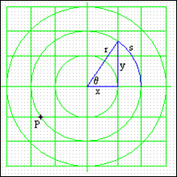
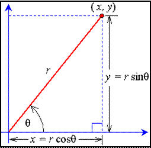

Polar & Rectangular Coordinates
| any point can be identified by either (x,y) or (r,θ) |  |
Convert Polar Coordinates (r, θ) to Rectangular Coordinates (x, y)
| Recall SOH-CAH-TOA |  | |
| $\cosθ=x/r$ | $\sinθ=y/r$ | |
| $x=r\cosθ$ | $y=r\sinθ$ | |
| ... & so $(x,y)=(r\cosθ,r\sinθ)$ | ||
| Find the rectangular coordinates of $(6,-50°)$ | |
| $x=r\cosθ$ | $y=r\sinθ$ |
| $x=6\cos(-50θ)$ | $y=\sin(-50°)$ |
| $x≈3.86$ | $y≈-4.60$ |
| ... & so (6,-50°)≈(3.86,-4.60) | |
Convert Rectangular Coordiantes (x,y) to Polar Coordinates (r,θ)
| r: Pythagorean Theorem | θ: SOH-CAH-TOA |
|---|---|
| $r^2=x^2+y^2$ | $\tanθ=(y/x)$ |
| $r=√{x^2+y^2}$ | $θ=\tan^{-1}(y/x)$ |
| $\table \text"domain: (all reals)"; \text"range: "(-π/2,π/2)$ | $θ=\tan^{-1}(y/x)+π$ |
$\tan^{-1}$ determines angles in quadrants I & IV, so add π radians for points in quadrants II & III
| Find the polar coordinates of (-3,5) | |
| $r=√{x^2+y^2}$ | $θ=\tan^{-1}(y/x)+π$ |
| $r=√{9+25}$ | $θ=\tan^{-1}(5/{-3})+π$ |
| $r≈5.83$ | $θ≈2.11^r$ |
| ... & so $(-3,5)≈(5.83,2.11^r)$ | |